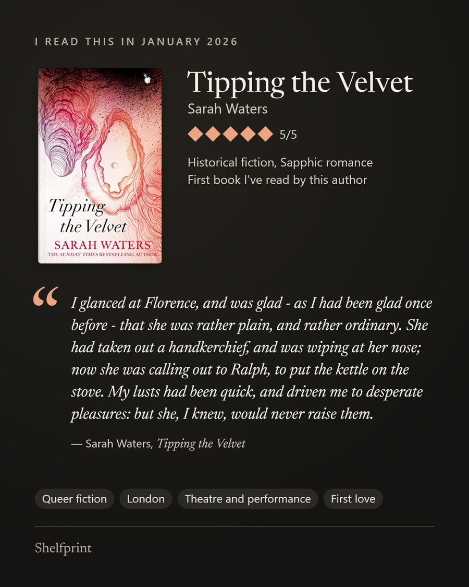
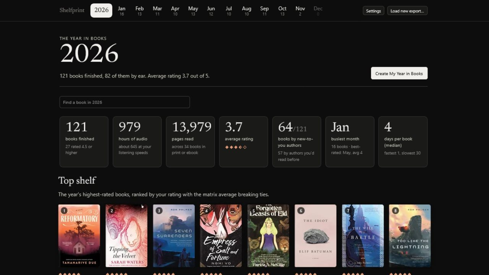
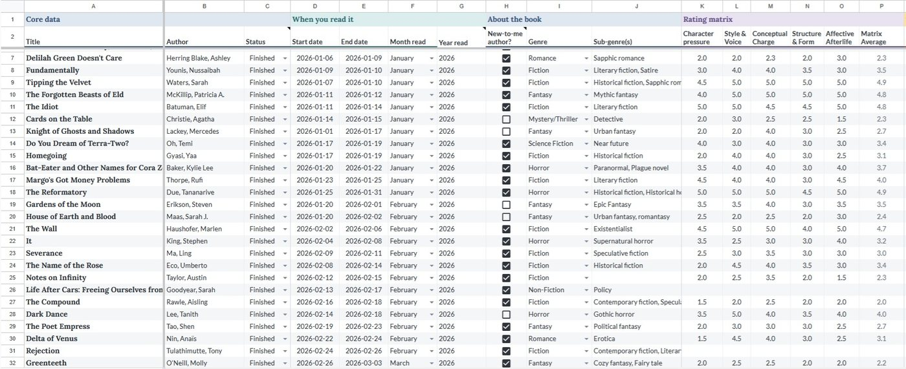
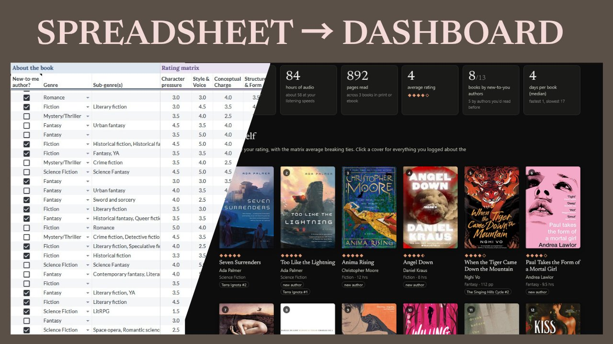

Image cards for one book
Your rating, your tags, and your own words: a quotation, a one-line take, or a review of any length. Choose what goes on the card, in post, square, or story size, with a light or dark look.
Shelfprint
Shelfprint turns the reading log in your own spreadsheet into finished images: a card for one book, a monthly wrap-up, and your year in books.
A spreadsheet is a good place to keep a reading record. Shelfprint is what you do with it next. Share with the friends and communities you already have, or keep it all to yourself.
Open Shelfprint Get the spreadsheet template
The template opens as your own copy in Google Sheets. It's also available for Excel and LibreOffice Calc.
Free and open source. No account required.

Most reading spreadsheets stop at the charts inside the sheet. Shelfprint picks up from there, so sharing a book or a month doesn't mean rebuilding it by hand somewhere else.
Your rating, your tags, and your own words: a quotation, a one-line take, or a review of any length. Choose what goes on the card, in post, square, or story size, with a light or dark look.
Every month gets its own page: the books you finished, your ratings, hours and pages, and the themes that ran through them. One button turns the month into a single image to share.
A set of year-end image cards, sized for a carousel. You choose which cards to include, which books to feature, and the order. Each card comes with a note on exactly what it counted and how.
Ratings, genres, formats, authors, and every cover from your year, month by month. Shelfprint is as much for looking back on your reading as for sharing it.

Two pieces work together: the Shelfprint Tracker, a spreadsheet template where you log your books, and the Shelfprint page, which reads an export of it.
Make a copy of the Shelfprint Tracker and add books as you finish them. Only a title and a date are required. Every other column is optional.
Download the Reading Log tab as a CSV file and drop it onto the Shelfprint page. Your books are there the next time you open it.
Look through your months and your year, then create image cards to post wherever you like, or nowhere at all.

The Reading Log tab of the Shelfprint Tracker. Want to look before you log anything? Open Shelfprint and choose “try it with sample books.”
A short introduction to the tracker, the page, and the images you can make.

▶ Watch the introduction (1:34)The video plays from YouTube. Nothing is requested from YouTube until you press play.
Your log lives in your own spreadsheet, in whichever program you like. Shelfprint reads it and gives you something to show for it.
There's nothing to sign up for, and nothing depends on Goodreads, StoryGraph, Kindle, or Amazon.
Your file is read in your browser and isn't uploaded to Shelfprint. There is no Shelfprint server-side database. Anything that would send information about your books, such as cover lookup, is off until you turn it on.
Shelfprint is released under the MIT License. The whole page is one file you can read, download, or host yourself.